San Diego's Premier Intercollegiate Bollywood‑Fusion & Raas‑Garba Competitions
Since 2016, TamashaSD has been a nonprofit, student-run organization at UC San Diego dedicated to celebrating South Asian culture through dance, creativity, and community. Each year, we bring collegiate teams from across the country to San Diego for two premier dance competitions: TamashaSD, showcasing Bollywood-Fusion, and SanedoSD, celebrating the tradition and energy of Raas-Garba.
Together, our competitions create a platform for dancers to compete at the highest level, connect with the broader South Asian dance community, and celebrate the cultures and art forms that bring us together.
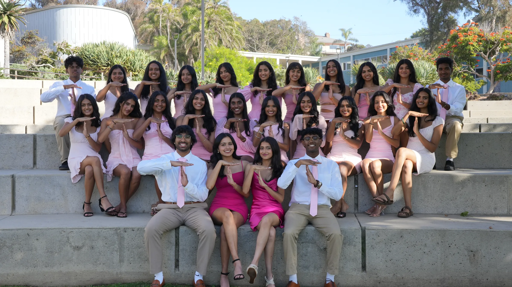
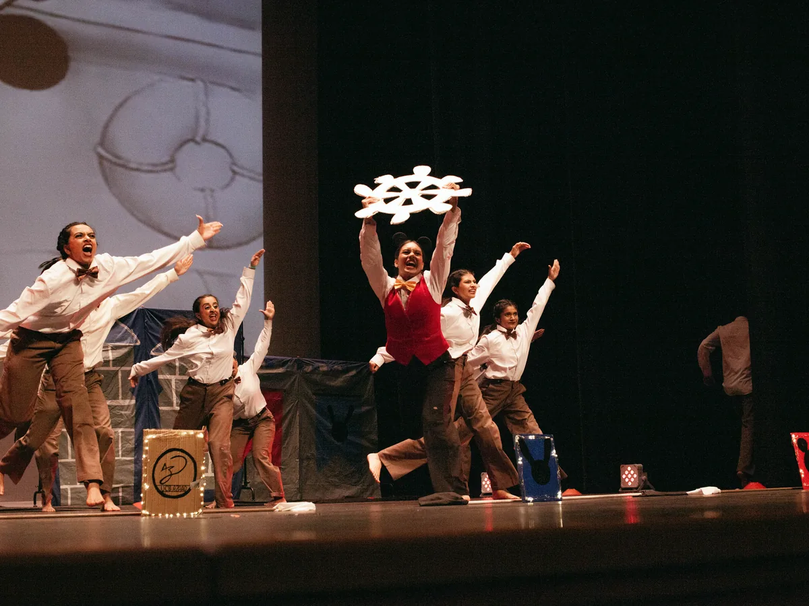
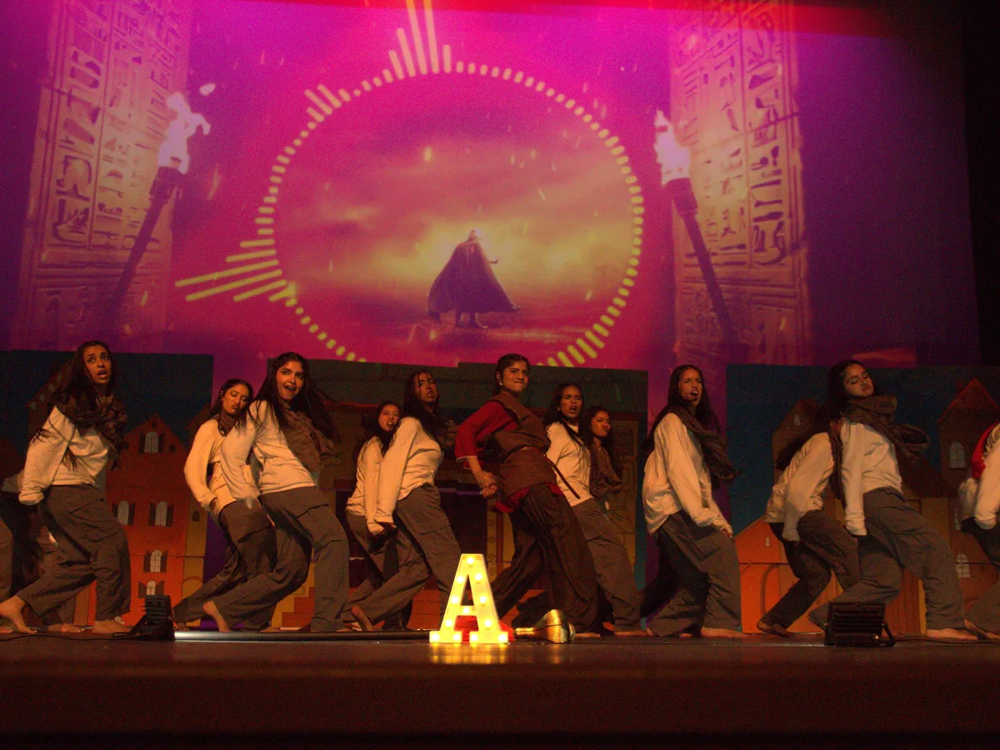
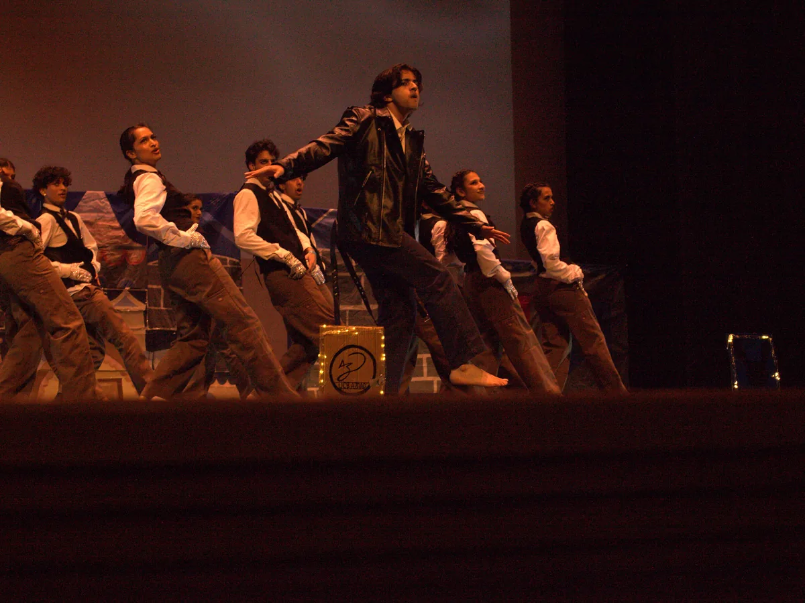
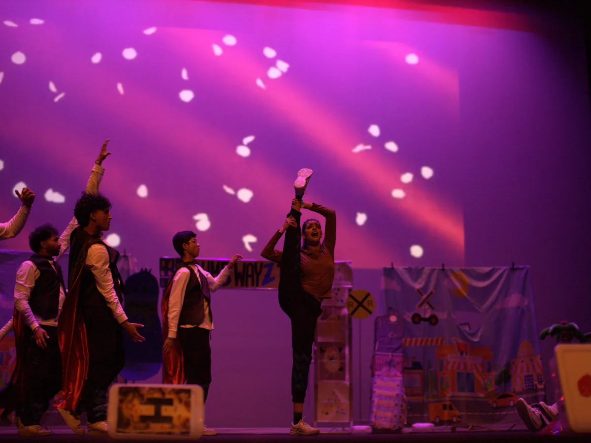
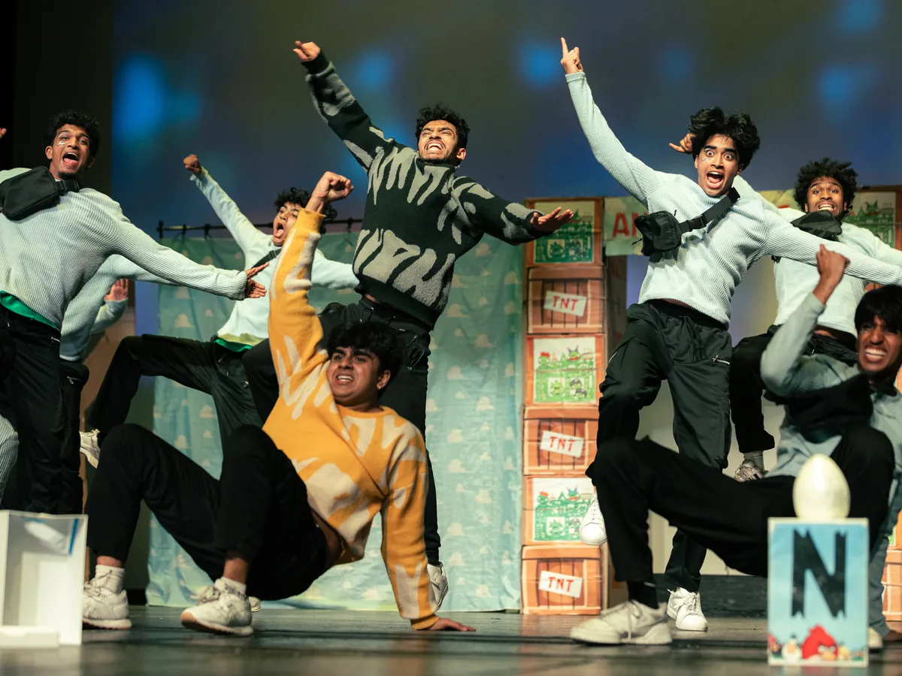
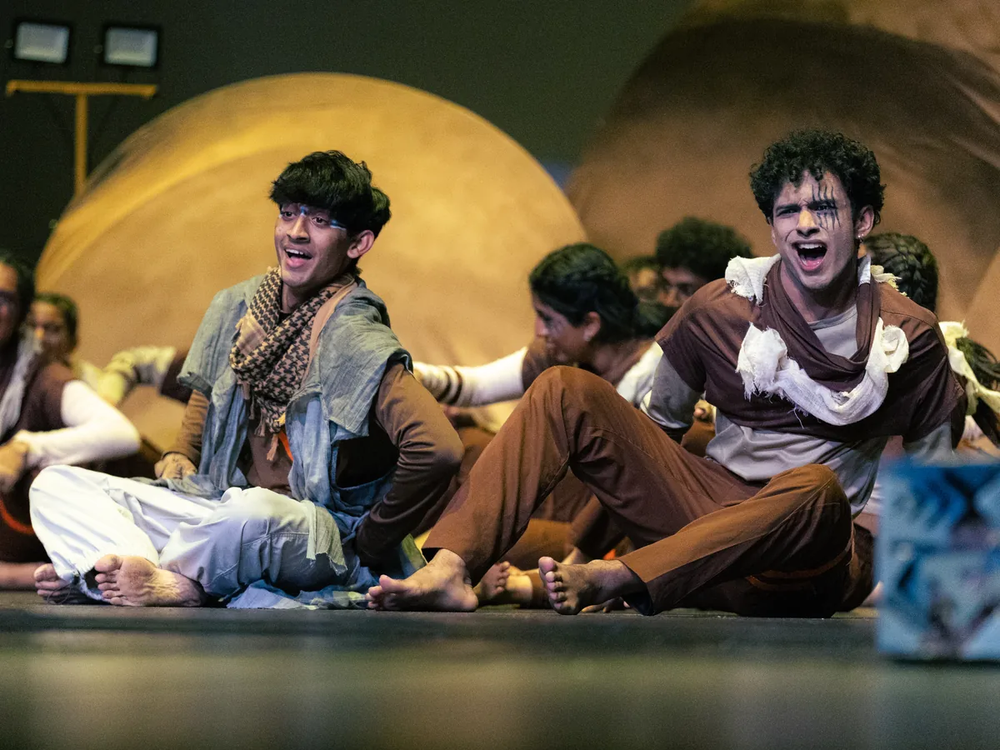
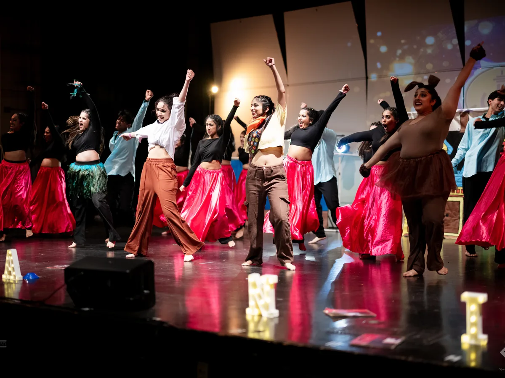
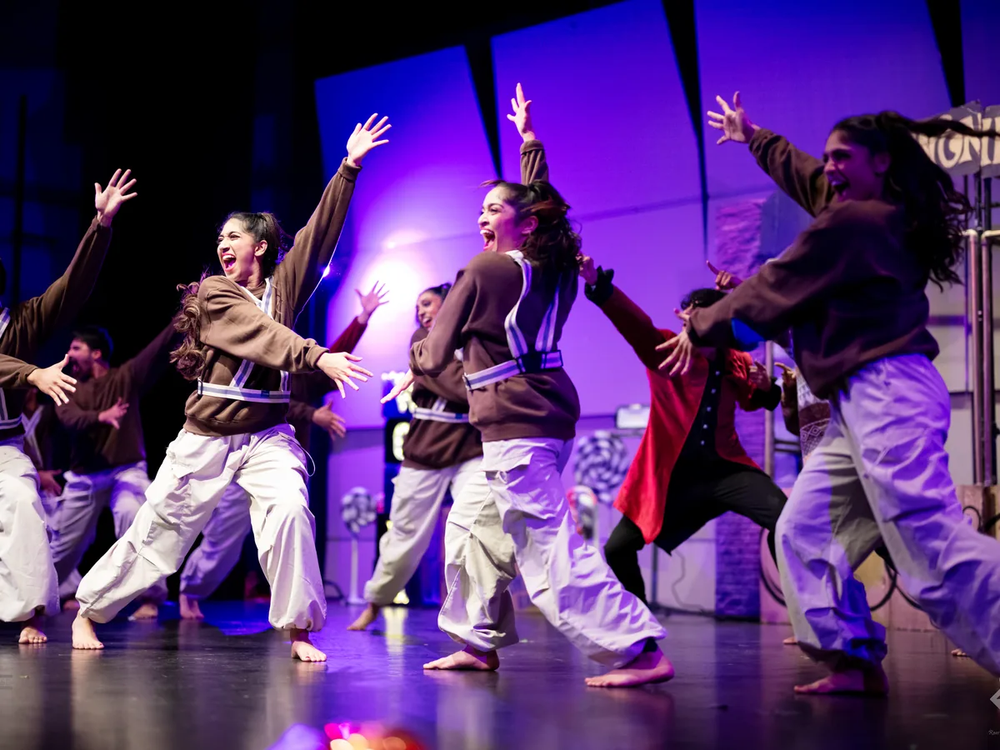
TamashaSD is UC San Diego's annual intercollegiate Bollywood-Fusion competition, bringing collegiate dance teams from across the country to San Diego to compete on a national stage. Teams perform original choreographed sets that combine Bollywood with styles such as Indian classical, bhangra, hip-hop, contemporary, and other forms of dance.
TamashaSD is part of the Desi Dance Network (DDN) circuit, where teams compete throughout the season to earn points and qualify for Legends, DDN's national Bollywood-Fusion championship. The competition gives teams an opportunity to showcase months of choreography, production, and training while competing against some of the strongest programs in the collegiate circuit.
View Placings and History →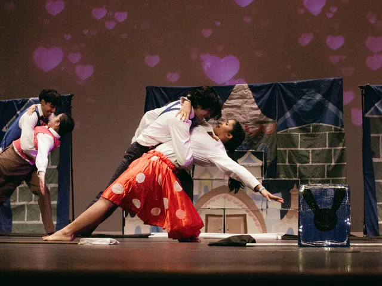
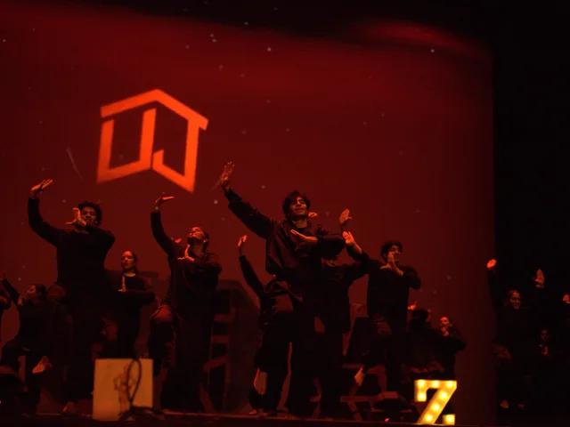
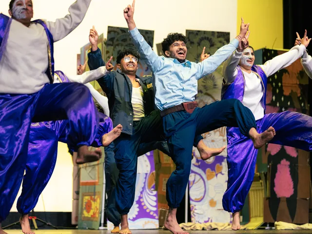
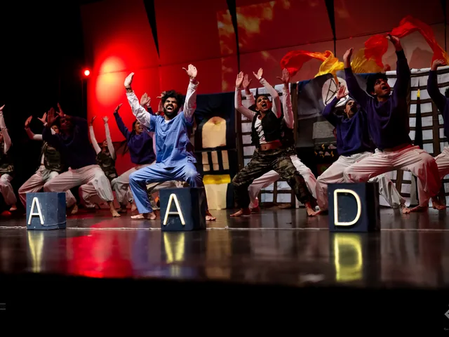
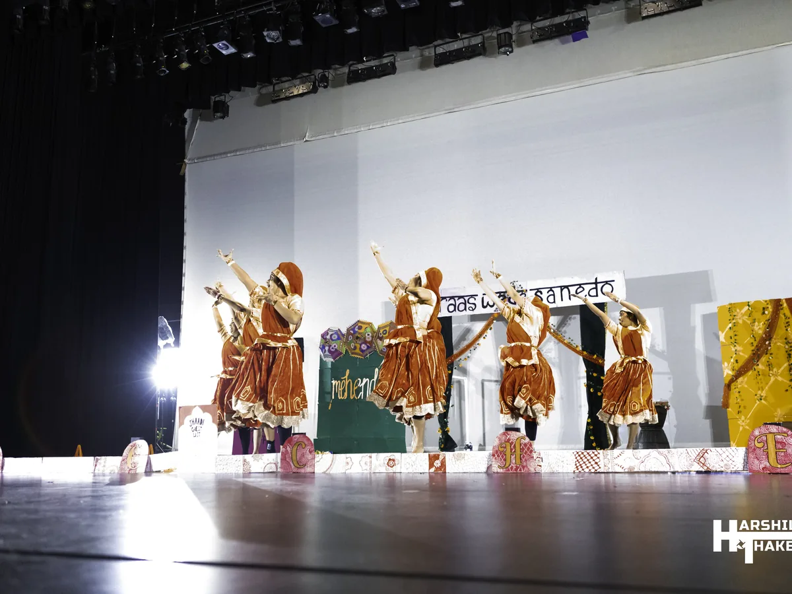
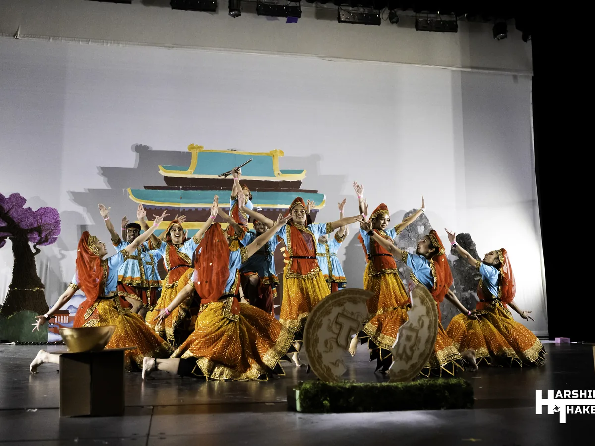
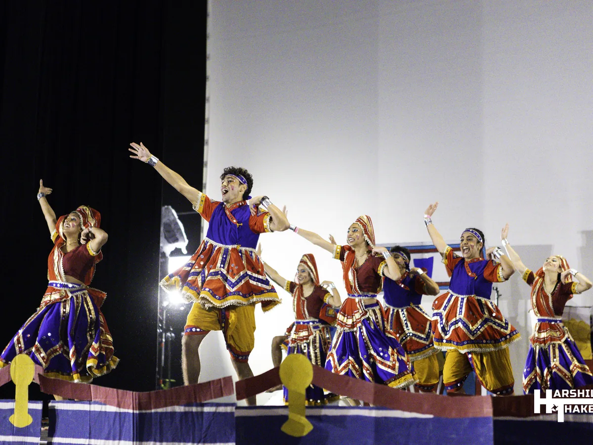
SanedoSD is UC San Diego's annual intercollegiate Raas-Garba competition, bringing collegiate teams from across the country to San Diego to compete on the national stage. Rooted in the traditional folk dances of Gujarat, India, teams perform original choreographed sets that showcase Raas and Garba through intricate formations, synchronization, music, and creative staging.
SanedoSD is part of the national collegiate Raas circuit, where teams compete throughout the season to earn a spot at Raas All-Stars, the national championship for collegiate Raas. The competition gives teams a platform to showcase months of preparation and performance while celebrating the cultural traditions at the heart of Raas-Garba.
View Placings and History →